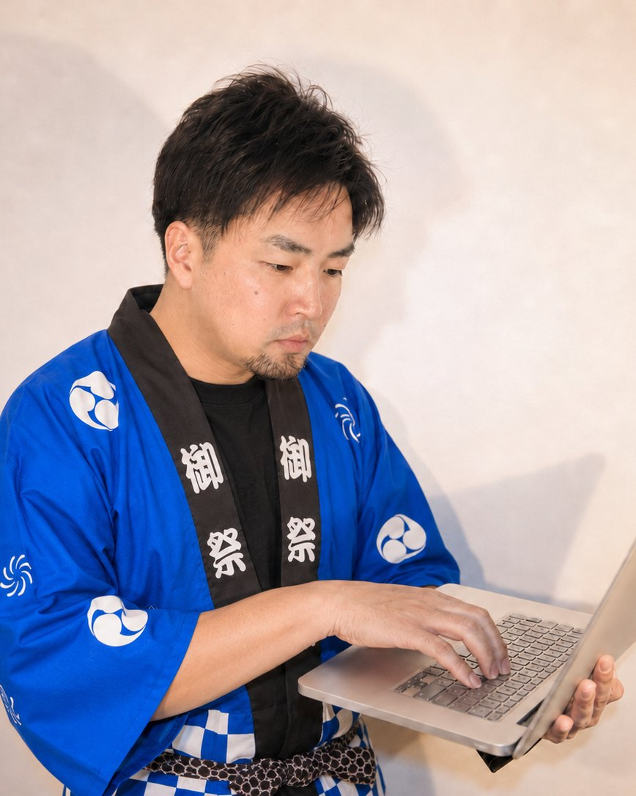

見つけられる
検索・マップ・SNSから、探している人と出会う。
web導線設計
見つかる、信頼される、相談される。
つくるだけでは終わらない。出会いから相談まで、事業の魅力がきちんと届く流れを一本につなぎます。
01 / 08SERVICE MOVIES
相談につながる導線を設計します。
検索・マップ・SNSから、探している人と出会う。
強み・人柄・判断材料が伝わり、相談前の不安が下がる。
迷わず問い合わせできる流れを整える。
LP・HP制作を軸に、MEO・公式LINE・SNSまで。ばらばらの施策ではなく、見込み客が出会い、納得し、相談へ進むまでの流れとして設計します。
足りないのは努力ではなく、導線です。
FOUND
検索やGoogleマップで、探している見込み客に出会えていない。
TRUST
強み・人柄・判断材料が伝わらず、相談前の不安が残っている。
CONTACT
予約・問い合わせまでの導線が薄く、途中で離脱されている。
MEO・検索・SNSで出会う。
LP・HPで選ばれる理由を伝える。
事例・人柄・進め方で不安を減らす。
フォーム・LINE・電話へ迷わず進める。
LINEやSNSで再接点をつくる。
成果を検証し、次の一手へ磨く。
強み・人柄・信頼材料を整えます。
広告やSNSから、相談へつなげます。
Googleマップで見つかる土台を整えます。
予約・相談につながる公式LINEを整えます。
発信を相談へ近づけます。
信頼感が伝わる名刺を整えます。
業務や顧客接点に合う仕組みを設計します。
検索で見つかり、ページで信頼され、LINEやフォームで相談につながる。
準備中
相談までの導線と見せ方を設計します。
来店・相談できる接点を整えます。
再来店につながる関係を設計します。

代表は、京都観光・グルメアカウント【おいでやす】をプロデュース兼カメラマンとして立ち上げ、1年でフォロワー5万人・平均再生7万回のアカウントを設計しました。
人が何に反応し、何を信頼し、なぜ行動するのか。数字だけでは見えない、人の感情から導線を設計します。
【おいでやす】京都観光/グルメ（2024年6月〜2025年10月、解散時点）。プロデュース・撮影・編集を担当。
【おいでやす】京都観光/グルメ を開始。プロデュース兼カメラ・編集を担当
同アカウント解散。1年でフォロワー5万人・平均再生7万回のアカウントを設計
ホームページ制作の市場調査・学習を本格化
SNS運用代行を開業
ホームページ制作を開始
GOENWeb Direction Design
ご縁を一生モノに。
Message日本一安いホームページ制作会社を目指してます。
値段以上のホームページお作りします。
完成度も負けません。
依頼前でも大丈夫です。30分相談OK、オンライン対応、強引な営業なし。今の状況を一緒に整理しましょう。
まずはLINEで、気軽にご相談ください。
予約が増えない原因、導線改善、サイト改善など。状況を送っていただければ、必要な施策だけをお返しします。
公式LINEで無料相談する売り込みなし初回相談無料オンライン対応